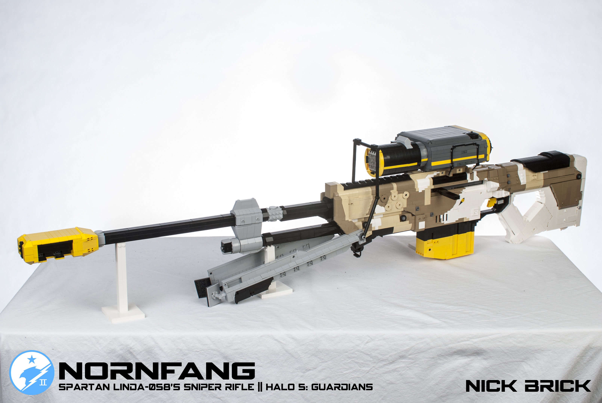
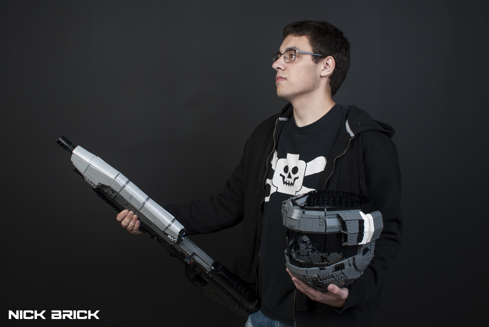

Interview with Nick Brick
The fourth episode in the RebelLUG Interview series
10/31/18
1. First of all, who are you and what social media platforms are you found on?
I’m Nick Jensen, and currently I’m a mechanical engineering undergraduate at University of Wisconsin-Platteville. When not overwhelmed with classes, I build LEGO gaming creations under the name Nick Brick. YouTube, Flickr: Nick Brick; Twitter: @NickBrickBuilds; Instagram, Facebook: @LegoByNickBrick
2. Which social media platform is your favorite, or which one do you prefer to visit, and what content do you like to browse and/or produce on each?
Each platform has different advantages for me. Facebook connects me to friends back home, from LEGO cons, and at UWP; Flickr is where I find high-end static LEGO models; YouTube is where I find high-end functional LEGO models (plus some static), and watch the nonsense uploaded by Rooster Teeth and their sister channels; Twitter is where I connect with professionals in the gaming industry and other influencers; Instagram is where I connect with others who share fandoms (Rooster Teeth, gaming, cosplay, science, music, etc.); and Discord is where I go to chat with my closest friends in the LEGO community. As for content creation, I prefer creating for YouTube. Video takes a lot more work than photos, but it adds a personal touch that is difficult to do in photos and is the ideal way to show a build with functions.
3. How long have you been building with LEGO, and how long have you been involved in the LEGO community? Where and when did you start posting online?
I’ve built with LEGO for almost my whole life. Started off young with Duplo! I started posting my creations online with Lego.com in the section they called “Cool Creations”, believe it or not. I’m guessing this was the early 2000s. From there, I moved on to MOCpages in June 2008. The reason was: I was building life size weapons from Halo, Star Wars, and 007 games, but Lego.com would reject all these submissions for obvious reasons. I wanted so badly to show off these builds, so I created my MOCpages to do just that. Following MOCpages, I created my Flickr in December 2009, and YouTube in June 2011.
4. Where do you draw inspiration? Are there any certain builders or MOCs that inspire you? Or do you get inspired outside of LEGO?
Most of my build inspiration comes from outside the realm of LEGO. I love gaming, but as of late there seems to be toxicity towards game developers from gamers who call themselves fans. It’s disappointing to see. Game developers are people too, and every single one I’ve met is passionate about what they create, and hope players enjoy their games. So, in a way every gaming build I create is a love letter to the artists, programmers, directors, and designers who imagine and realize the games I enjoy playing. Besides the games, my biggest inspirations are my core group of GamerLUG. Dan, Caleb, Simon, Alec, Eric, Evan, Sean, Tyler, Mel, Kyle, and Bryce, each one of you mean a lot to me as builders and as friends. I must give credit to those who inspire my videos as well. ZaziNombies, Kyle (MyDifferentUsername), Beyond the Brick, my close friend and VFX artist Jordan, Achievement Hunter, and Rooster Teeth (especially Burnie Burns) are massive influences on the way I do my thing on YouTube.
5. What's your favorite theme or subject to build in? Why do you find it so appealing?
1:1 scale, easily. It’s not something that has always been a popular way to build. In early LEGO Star Wars sets from the late 90s/early 00s, the instruction booklets had comics where the characters in the set would get the main model destroyed and would rebuild them into several alternate models to continue their adventure. One of the models in the Gungan Sub set’s comic was a diving mask that used the cockpit pieces as goggles and a breathing apparatus. I thought, wait, you can build human sized things with LEGO? Cool! This was the inspiration I had for building in life size. Before building guns, weapons, and cosplay-type builds in 1:1 scale like I do now, I replicated other things I had. I remember when I was 8 or 9, shortly after the Nintendo GameCube released, I built a LEGO GameCube with an opening disc cover and a controller that could be plugged in. The appeal of 1:1 building is creating something lifelike. I love getting compliments like “that doesn’t even look LEGO” or “that’s cosplay quality,” because that’s the level of detail and realism I like shooting for.
6. What is your favorite hobby or social activity outside of building? How do you spend your time outside of the LEGO realm?
I try to get involved on campus. Volunteering my time for my residence hall, attending shows, that sort of thing. Most of my friends at UWP I have met just by pushing myself out of my comfort zone and becoming a part of the community. Besides that, I like listening to music and attending live shows, LEGO and pop culture conventions, and gaming.
7. What are your favorites (music, movies, books, etc.)?
Music – Muse is my favorite band. I’ve seen them twice, and they’re the best live show you’ll see. Absolution is a flawless album. Movie – Inception. You mustn’t be afraid to dream a little bigger, darling. *whips out grenade launcher* TV Shows – It’s Always Sunny in Philadelphia and Black Mirror. For different reasons. Video game – Halo 3. I’ve grown up playing so many first-person shooters, but nothing has topped this. Titanfall 2 comes close for me, though. I like my multiplayer games. LEGO Set – Shuttle Expedition. Space! Online LUG related to Lego and Star Wars fandom – RebelLUG
8. What's an aspect of the LEGO community that you would want to change?
This opinion might be a bit controversial: It should be acceptable for all techniques or part usages to not be credited. If you’re using another builder’s ideas, entire MOC, or something like that, yes, credit them. A part used in a certain way? Several pieces arranged in a certain configuration? Don’t worry about where you’ve first seen that done. Build without worrying you’re “stealing” a part usage.
9. What is your favorite MOC that you’ve built? Or the one you’re most proud of?
Nornfang is my favorite. The camouflage pattern and wolf graphic being 100% brick built was such a fun challenge. I’m most proud of the ODST helmet though. It’s far from my best build in my opinion. So many things I could have done better. However, what was important in this build was the frame construction. Since releasing the WIP photos of the frame techniques, there have been fantastic fully wearable helmet builds that don’t require glue or padding. Watching others do better things with what I design makes me proud.
 
10. Do all your friends/family know you build with LEGO as a hobby? Or is it something that has never come up in a conversation?
Of course they know! I don’t hide it. It’s a hobby most people can connect to, usually from memories of their childhood LEGO collection. Creating builds grounded in gaming and pop culture also helps. I can show someone my LEGO portfolio and they might be like “Oh, you play this game too?” Or if they’re a gamer, most times I can be like “Hey, I built something from that game with LEGO. Want to see it?” Be proud of who you are. I’m proud to be a LEGO nerd.